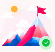
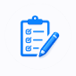

Ma progression
Félicitations ! Votre profil d'orientation est prêt.
100%
terminé
Inscription
confirmée
confirmée
Test de
niveau
niveau
Cours en
cours
cours
Évaluation
intermédiaire
intermédiaire
Certification
finale
finale

Votre profil est prêt !
Découvrez vos forces, vos domaines de prédilection et les métiers qui vous correspondent le mieux.
Rapport disponible
Voir mon rapport

Votre test d'orientation
Vous pouvez revoir ou reprendre le test d'orientation à tout moment.
Passer ou revoir le testÀ savoir
- Votre profil a été généré à partir de vos réponses et de notre analyse.
- Le rapport d'orientation contient vos forces, domaines de prédilection et métiers recommandés.
- Vous pouvez télécharger votre rapport et y revenir à tout moment.
Besoin d'aide ?
Votre conseillère est là pour vous accompagner si vous avez des questions.